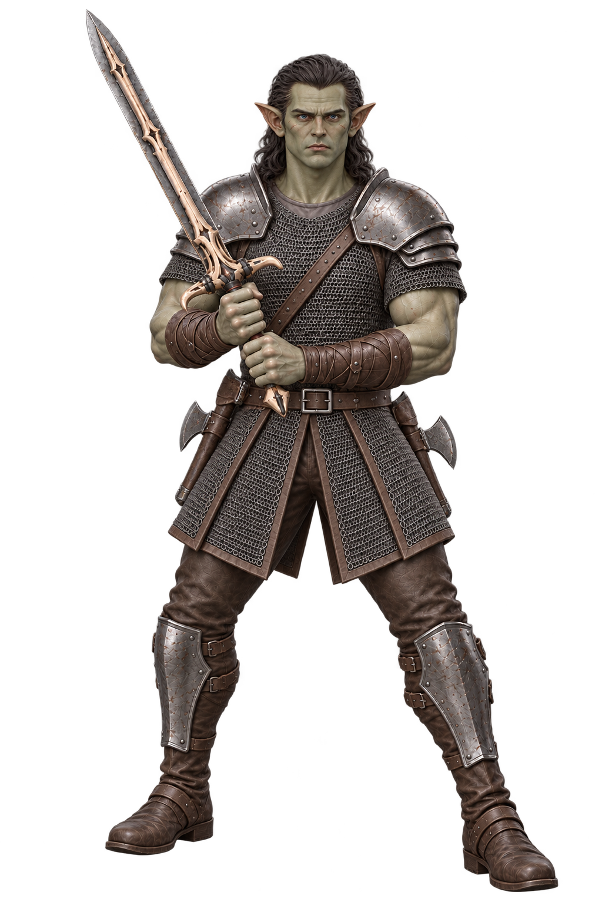
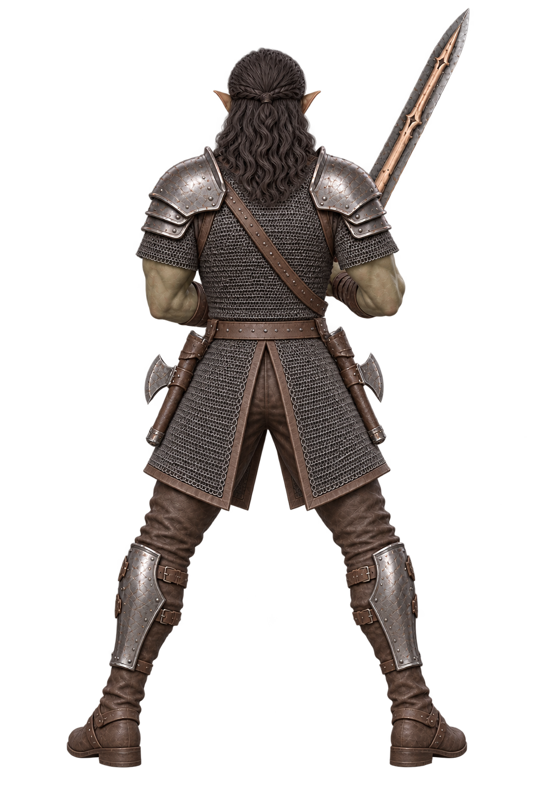
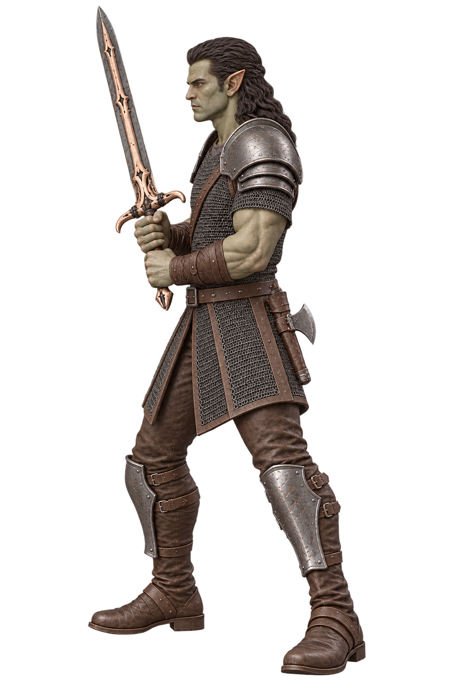
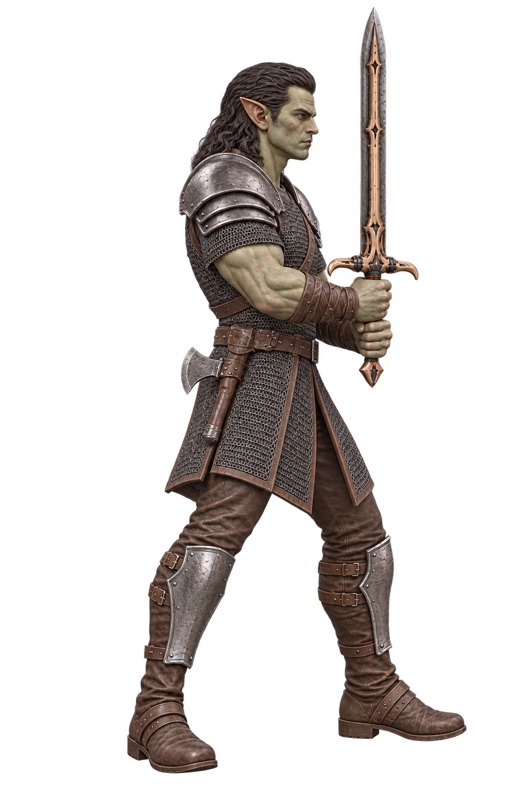

Druk: “rendered 3D sculpt” reference test
Left: current assembled miniature. Right: fresh reconstruction from four images explicitly prompted as a rendered 3D sculpt, before head, hand or weapon repairs. Both use the same preview lighting and a unit-width base.
Current Druk
Rendered 3D reference test
Loading both models…
This is a visual comparison, not a controlled proof that a phrase improves reconstruction. The current model includes earlier manual head, hand and weapon assembly; this candidate has none. The image generator can also vary pose and proportions between views.
Download new candidate GLB · Exact image prompts · Verified multi-view receipt
New 2D references
These are generated images depicting a 3D sculpt, not actual 3D renders. The comparison above loads the actual reconstructed meshes.



